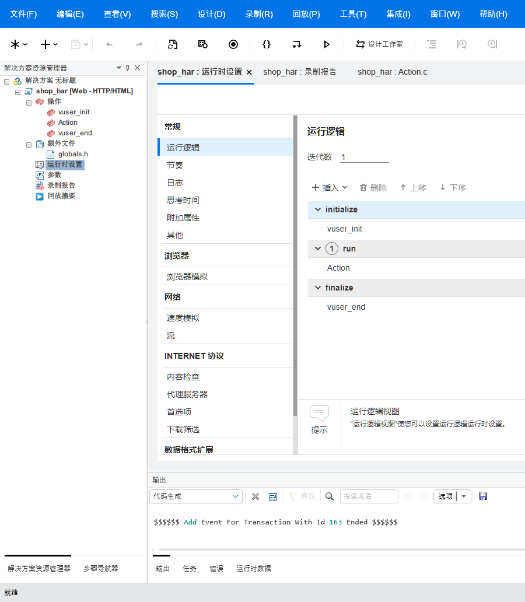
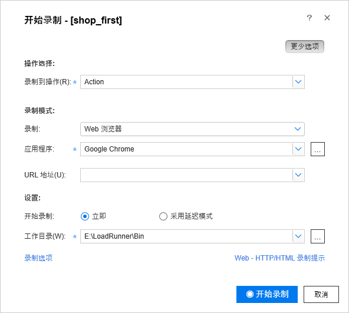
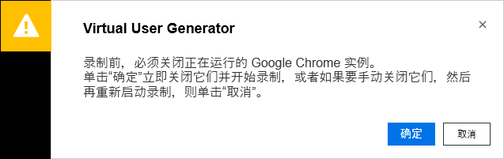
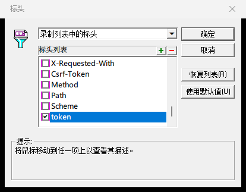
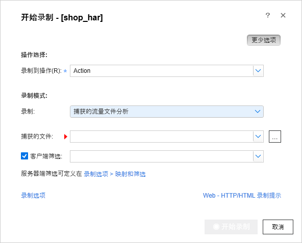

第 14 章 LoadRunner 安装与第一个脚本¶
本章目标
- 在自己的电脑上装好 LoadRunner 2023 社区版和简体中文语言包，避开安装时最常见的几个坑；
- 认识 VuGen 的界面，知道一个脚本由哪些文件组成，vuser_init、Action、vuser_end 按什么顺序执行；
- 把练习网站上登录、搜索、下单、支付的流程录成第一个脚本；
- 读懂录出来的每一类语句和参数；
- 会回放脚本、看回放日志，能自己排查回放时的 401 错误；
- 明白回放成功和业务成功的区别，知道下一章要解决哪些问题。
14.1 准备工作¶
14.1.1 电脑要求¶
本章用的是 LoadRunner 2023 社区版（版本号 23.0.0.628），装上简体中文语言包以后界面是中文。实测环境是 Windows 11 和 Chrome 155。下面的要求来自官方的 2023 版支持矩阵（Support Matrix）和安装指南：
| 项目 | 要求 |
|---|---|
| 操作系统 | 64 位 Windows。支持矩阵列出的是 Windows 10（Enterprise LTSC 2019、20H2、21H2）和 Windows 11（21H2）；本教程是在更新版本的 Windows 11 上装的，录制、回放都正常 |
| CPU | 至少 2 核，推荐 8 核 |
| 内存 | 至少 8 GB，推荐 16 GB |
| 磁盘 | 官方要求可用空间 50 GB，推荐 100 GB 的固态硬盘，压测结果和日志都要占地方。单看安装：装好后的 LoadRunner 目录约 3.9 GB，解压出来的安装文件约 1.8 GB |
| C 盘 | 就算装到 D 盘、E 盘，C 盘也要留 5 GB 以上，原因见下面 |
| 浏览器 | Google Chrome，官方推荐用它录制 |
| 账号 | 安装要用管理员账号；要在这台电脑上直接装，官方不支持通过远程桌面安装 |
装到别的盘还要占 C 盘，原因有三处：
- 主程序是一个自解压包，默认把 1.8 GB 的安装文件解到
C:\Temp下面，这一处可以改； - 安装时，Windows 的安装服务（Windows Installer）会先把 1.4 GB 的安装包整份复制到
C:\Windows\Installer，再往目标盘装，这一处改不了； - 一部分运行库和系统组件只能装在 C 盘。
实测 C 盘只剩 1.94 GB 时安装直接失败。C 盘实在腾不出空间，用 14.2.4 节的进阶做法。
官方安装指南还建议：安装前关掉杀毒软件，并确认 Windows 更新没有在后台装补丁。
说明
提示：显示器分辨率。 支持矩阵要求屏幕分辨率至少 1366×768，并且写明 Controller（第 16 章要用）不支持 4K 及以上分辨率的显示器。用 4K 屏的同学，用 Controller 之前先把显示分辨率调到 4K 以下。
14.1.2 为什么用 2023 社区版¶
- 免费，50 个虚拟用户一直能用。 安装时会自动装上社区版授权，官方安装指南的原话是免费提供 50 个虚拟用户。不用申请许可证，也不会过期（官方说明里它是永久授权，绑定在装的这个版本上），学习和做小规模验证足够了。
- 官方支持 Windows 11。 支持矩阵里列了 Windows 11，在新电脑上装不容易出兼容问题。
- 学会了能用到老版本上。 web_url、web_custom_request、lr_think_time 这些核心的脚本函数，在 11、12 版里就是这么写的；各版本的菜单和对话框有些差别，对照着找一般都能找到。公司里还在用老版本的，在这里学到的东西照样能用。
官方后来又发布了好几个新版本（写这一章时最新的是 26.3，VuGen 起始页的新闻里能看到），界面陆续有变化。本教程统一用 2023 版。
14.1.3 拿到安装包¶
官方渠道。 产品改名以后（第 13 章 13.5.1 节），官方的试用页在 https://www.opentext.com/products/professional-performance-engineering/trial：
- 打开试用页，填写申请表；
- 邮箱要用公司邮箱；
- 提交以后，按官方发来的指引下载。
这条路有两个限制：给的是当时的最新版，和本教程的 2023 版界面有出入；2023 版这样的旧版本放在官方的软件授权与下载门户里，要有正式授权的账号才能下载。
国内软件下载站。 2023 版在国内一些软件下载站能找到原版安装包，一般是一个压缩包，解开后有三个程序：
| 文件 | 大小（字节） | 用途 |
|---|---|---|
| Micro_Focus_LoadRunner_2023_Community_Edition.exe | 1,797,204,368 | 主程序 |
| Micro_Focus_LoadRunner_2023_Community_Edition-Language_Packs.exe | 577,016,632 | 语言包，简体中文在里面 |
| Micro_Focus_LoadRunner_2023_Community_Edition-Additional_Components.exe | 1,254,766,456 | 附加组件，本教程用不到 |
压缩包里夹带的网址快捷方式、说明文件不用管，也不要运行这三个程序以外的东西。把它们放到一个空间够的盘上，比如 E:\LR2023-setup。
下载后一定核对数字签名。 数字签名能证明文件确实出自官方，下载以后没被改过：
- 右键安装程序，选「属性」，切到「数字签名」页签；
- 签名列表里的签名者是 Micro Focus Group Limited；
- 选中它，点「详细信息」，弹出的窗口里显示「此数字签名正常。」
主程序和语言包两个文件都要查。没有「数字签名」页签、签名者不对，或者详细信息里说签名无效的，说明文件不是原版或者被改动过，删掉换个地方重新下载。
也可以在 PowerShell 里查，在安装程序所在的文件夹执行：
> $s = Get-AuthenticodeSignature .\Micro_Focus_LoadRunner_2023_Community_Edition.exe
> $s.Status
Valid
> $s.SignerCertificate.Subject
CN=Micro Focus Group Limited, O=Micro Focus Group Limited, S=Berkshire, C=GB
Status 是 Valid 就说明签名正常。
坑
网上的破解补丁。 社区版本身免费，装好就有 50 个虚拟用户的授权，用不着任何破解补丁或注册机。来路不明的补丁可能夹带病毒、木马，一律不要下载、不要运行。
14.2 安装 LoadRunner¶
14.2.1 解压主程序¶
双击 Micro_Focus_LoadRunner_2023_Community_Edition.exe。它是一个自解压包，先弹出一个英文的解压窗口，Save files in folder 下面的路径就是解压位置，默认是 C:\Temp\Micro Focus LoadRunner 2023 Community Edition。
把这个路径改到空间够的盘，比如 E:\LR2023-setup：可以直接改框里的路径，也可以点 Change... 选文件夹，然后点 Next 开始解压。解出来约 1.8 GB，里面是一个 DVD 文件夹。解压完成后，安装程序（DVD\lrunner\En\setup.exe）会自动启动。
14.2.2 跟着安装向导走¶
安装向导是中文的，按下面几步走，没提到的页面保持默认、点「下一步」：
- 前置组件。 电脑上缺少 LoadRunner 需要的前置软件（清单在官方的支持矩阵里）时，会先弹出一个对话框列出缺少的程序，点确定让它先装上。官方安装指南说，装完前置软件可能会重启电脑，重启了就再运行一次解压目录里的
DVD\lrunner\En\setup.exe。前置软件齐全的电脑不会出现这一步。 - 欢迎页「欢迎使用 Micro Focus LoadRunner 2023 安装向导」。这一页要选装哪个产品：选 LoadRunner，不要选 LoadRunner Enterprise Host。
- 最终用户许可协议。 勾选「我接受许可协议中的条款」。下面的「安装后启动 LoadRunner 代理」「创建桌面快捷方式」保持默认。
- 目标文件夹。 默认装在 C 盘（官方指南写的默认路径是
C:\Program Files (x86)\Micro Focus\LoadRunner）。点「更改」换到别的盘，比如E:\LoadRunner\。页面上写着「路径不得包含非英语字符」，路径里不要有中文，也尽量短。 - 已准备好安装。 点「安装」，等进度条走完。
- Micro Focus 身份验证设置。 装完会先出现这一页，上面有一个「指定 LoadRunner 代理将要使用的证书。」的勾选框，不要勾，直接点「下一步」。官方指南的说法是，这里的证书用于 LoadRunner 各组件之间的身份验证和加密通信，本教程用不到。
- 安装已完成。 最后一页有「安装 Network Virtualization」的勾选框。Network Virtualization 用来分析应用在各种网络条件下的表现，本教程用不到，勾着的话去掉，点「完成」。
14.2.3 装完之后¶
- 社区版授权已经自动装好，50 个虚拟用户，不用额外操作。想看一眼的话，在开始菜单找到 Micro Focus → LoadRunner → License → LoadRunner License Utility，要右键选「以管理员身份运行」才能打开。
- 开始菜单的 Micro Focus → LoadRunner 文件夹里有 Virtual User Generator（也就是 VuGen）、Controller、Analysis 三个程序，桌面上也有它们的图标。按 Win 键直接输入 Virtual User Generator 也能搜到。
- 先别急着打开，接着装中文语言包（14.3 节）。
- 解压出来的
DVD文件夹先留着，等语言包也装好、VuGen 能正常打开以后再删；下载的原始安装程序建议一直留着。
14.2.4 C 盘空间不够时（进阶，可跳过）¶
C 盘留不出 5 GB 的，可以绕开自解压和安装包复制这两处：先把安装文件解到 E 盘，再用 Windows Installer 的管理安装（msiexec /a）把安装包解成一份不压缩的映像，最后从映像安装。从映像安装时，复制到 C:\Windows\Installer 的只是一个约 10 MB 的安装数据库，1.4 GB 的安装包就不用整份复制了。
下面的命令都在以管理员身份运行的 PowerShell 里执行（右键开始按钮，选「终端(管理员)」或「Windows PowerShell(管理员)」）。假设三个安装程序放在 E:\LR2023-setup，路径按你的实际位置改。
第一步，用 Windows 自带的 tar 把主程序解到 E 盘。tar 能直接解开这种自解压包，不会启动安装向导：
> cd E:\LR2023-setup
> mkdir pkg
> mkdir tmp
> tar -xf .\Micro_Focus_LoadRunner_2023_Community_Edition.exe -C pkg
第二步，只装前置组件（运行库）。这条命令来自官方安装指南；本教程的电脑上运行库本来就齐全，没有实际跑这一步：
> Start-Process .\pkg\DVD\lrunner\En\setup.exe -ArgumentList "/InstallOnlyPrerequisite /s" -Wait
第三步，把安装包解成映像。第一行把临时文件也放到 E 盘，只对当前这个 PowerShell 窗口有效：
> $env:TEMP = "E:\LR2023-setup\tmp"; $env:TMP = "E:\LR2023-setup\tmp"
> $p = Start-Process msiexec -ArgumentList '/a "E:\LR2023-setup\pkg\DVD\lrunner\MSI\LoadRunner_x64.msi" /qn TARGETDIR="E:\LR2023-setup\admin" /l*v "E:\LR2023-setup\admin.log"' -Wait -PassThru; $p.ExitCode
0
第四步，从映像安装：
> $p = Start-Process msiexec -ArgumentList '/i "E:\LR2023-setup\admin\LoadRunner_x64.msi" /qn /norestart INSTALLDIR="E:\LoadRunner" NVINSTALL=N IMPROVEMENTPROGRAM=0 /l*v "E:\LR2023-setup\install.log"' -Wait -PassThru; $p.ExitCode
0
| 写法 | 意思 |
|---|---|
/a |
管理安装：把安装包解成不压缩的映像，放到 TARGETDIR 指定的文件夹，不会真的安装 |
/i |
安装 |
/qn |
不显示界面，静默执行 |
/norestart |
装完不自动重启 |
/l*v 文件 |
把详细日志写进这个文件，出错时看它 |
INSTALLDIR |
装到哪里 |
NVINSTALL=N |
不装 Network Virtualization |
IMPROVEMENTPROGRAM=0 |
不参加 LoadRunner 改进计划 |
$p.ExitCode |
打印退出码，0 表示成功 |
实测映像约 3.7 GB，从映像安装用了约 8 分钟，装好后的 E:\LoadRunner 约 3.9 GB。静默安装没有界面，14.2.2 节里的证书页、Network Virtualization 页都不会出现。映像先留着别删，装语言包、以后修复 LoadRunner 时可能还要用到它。
14.3 安装中文语言包¶
14.3.1 安装步骤¶
- 双击 Micro_Focus_LoadRunner_2023_Community_Edition-Language_Packs.exe。它也是自解压包，解压窗口和主程序一样，默认位置也是
C:\Temp\Micro Focus LoadRunner 2023 Community Edition，改到和主程序同一个地方（比如E:\LR2023-setup）就行。解出来约 556 MB。这个包只解压，不会自动开始安装。 - 打开解压目录下的
DVD\Language-Packs\Chinese-Simplified\LoadRunner\，右键 LR_CHS.exe，选「以管理员身份运行」，会出现名为 LoadRunner 2023 CHS 的安装程序，按提示装完。 - 打开 VuGen，菜单变成「文件(F)、编辑(E)、查看(V)……」就装好了。VuGen 迟迟打不开的，看 14.3.2 节。
几点说明：
- 同一个文件夹里还有一个 LR_CHS_PSEUDO.exe，不要装它；旁边的 VugenSA、AnalysisSA 文件夹是给单独安装的 VuGen、Analysis 用的，装了完整版的不用管。
- 官方要求 Windows 本身的语言和语言包一致，简体中文语言包要装在中文版 Windows 上。
- LR_CHS.exe 自己没有数字签名，它是从签名正常的语言包程序里解出来的，查过外面那个程序的签名就行。
14.3.2 装完以后 VuGen 卡住不出主窗口¶
装完语言包第一次打开 VuGen，可能遇到这种情况：任务管理器里有 VuGen.exe 进程，主窗口却一直不出来。
去看 VuGen 的日志：按 Win+R，输入 %TEMP% 回车，打开里面的 HP.LR.VuGen.log，能看到这样的记录（节选）：
FATAL - UnhandledException caught
System.IO.FileLoadException: 未能加载文件或程序集"System.Data.SQLite, Version=1.0.117.0, Culture=neutral, PublicKeyToken=db937bc2d44ff139"或它的某一个依赖项。找到的程序集清单定义与程序集引用不匹配。 (异常来自 HRESULT:0x80131040)
在 ICSharpCode.UsageDataCollector.UsageDataSessionWriter..ctor(String databaseFileName, Func`1 guidProvider)
在 HP.Utt.UsageDataCollector.AnalyticsMonitor.OpenSession()
堆栈里的 AnalyticsMonitor 是 VuGen 的使用数据统计功能。语言包把这个功能打开了，它要加载 1.0.117.0 版的 SQLite 组件，安装目录里带的却是 1.0.115 版，加载失败，VuGen 就卡在了启动阶段。把这个功能关掉就好：
- 在任务管理器里结束卡住的 VuGen.exe；
- 用管理员身份打开记事本（开始菜单搜「记事本」，右键选「以管理员身份运行」），用「文件 → 打开」打开
C:\ProgramData\Micro Focus\LoadRunner\config.json。ProgramData 是隐藏文件夹，在文件名框里直接输入完整路径回车最省事； - 文件原来的内容是：
{
"usageAnalytics": {
"enabled": true
}
}
把 true 改成 false：
{
"usageAnalytics": {
"enabled": false
}
}
- 保存，重新打开 VuGen。
坑
装完 LoadRunner 要重开命令行窗口。 安装程序新增了 LR_PATH、LG_PATH、VUGEN_PATH 几个系统环境变量，值都是安装目录（比如 E:\LoadRunner\），VuGen 启动时靠它们找自己的文件。装之前就开着的 PowerShell 窗口里没有这几个变量，从那里启动 VuGen（比如输入 E:\LoadRunner\bin\VuGen.exe）会直接崩溃，弹出标题是「Critical error (cannot use ExceptionDialog)」的窗口，内容开头是：
System.ArgumentNullException: 值不能为 null。
参数名: path
在 System.IO.Directory.GetFiles(String path, String searchPattern, SearchOption searchOption)
在 HP.Utt.UttCore.UttAssemblyResolver.AddToLookupDictionary(String lookupDir, Boolean versionSpecific, Boolean includeChildFolders) ……
关掉旧窗口重新打开就好；VS Code 里的终端要把 VS Code 整个关掉再打开（第 1 章 1.2 节）。从开始菜单或桌面图标启动不受影响。
14.4 认识 VuGen 和脚本结构¶
14.4.1 界面¶
从开始菜单或桌面图标打开 Virtual User Generator。第一次看到的是起始页（Start Page）：左边「最近的活动」列出最近打开过的脚本；右边「新增功能」是联网读取的官方新闻，讲的是最新版本，和你装的 2023 版无关。没有打开脚本的时候，菜单里的「设计」「回放」是灰的。
打开一个脚本以后，界面是这样的（图里是窗口的左半部分，脚本名 shop_har 是 14.9.2 节生成的那个脚本）：

| 区域 | 位置 | 干什么 |
|---|---|---|
| 菜单栏 | 最上面 | 文件(F)、编辑(E)、查看(V)、搜索(S)、设计(D)、录制(R)、回放(P)、工具(T)、集成(I)、窗口(W)、帮助(H)。本章主要用录制和回放两个菜单 |
| 解决方案资源管理器（Solution Explorer） | 左边 | 列出打开的脚本和脚本里的各个部分，双击打开 |
| 步骤导航器（Step Navigator） | 左下角的页签，和解决方案资源管理器来回切换 | 把脚本按步骤一条条列出来 |
| 编辑区 | 中间 | 打开的文件、设置页排成一排标签页，图里开着的是运行时设置、录制报告和 Action.c |
| 输出（Output） | 下面 | 回放日志、代码生成日志都显示在这里，左上角的下拉框选看哪一种；窗格底部还有任务、错误、运行时数据几个页签 |
| 状态栏 | 最下面 | 显示「就绪」表示空闲 |
14.4.2 新建脚本¶
- 菜单 文件 → 新建脚本和解决方案（New Script and Solution），弹出「创建新脚本」（Create a New Script）对话框；
- 左边「类别」选 VuGen 下面的单协议（Single Protocol）；
- 中间的协议列表很长，选 Web - HTTP/HTML，可以在上方的筛选框里输入 web 缩小范围；
- 「脚本名」填
shop_first；「位置」默认是C:\Users\你的用户名\Documents\VuGen\Scripts，建议改成工程目录下的 lr 文件夹，比如D:\work\autotest-demo\lr（先在资源管理器里建好这个文件夹），路径里不要有中文；「解决方案名称」留空； - 点「创建」。
协议决定了 VuGen 用什么方式录制和回放。Web - HTTP/HTML 录的是浏览器和服务器之间来往的 HTTP 请求，回放时不需要浏览器，由 VuGen 直接把这些请求按顺序发出去。网站和接口的压测最常用的就是这个协议。
解决方案是装脚本的容器，一个解决方案里可以放好几个脚本。名称留空，VuGen 会建一个叫「无标题」的解决方案。本教程每次只用一个脚本，不用管它。
14.4.3 一个脚本由哪些文件组成¶
创建以后，解决方案资源管理器里的 shop_first 下面有这些节点（上一张图的左边）：
- 操作：vuser_init、Action、vuser_end，脚本的代码就写在这三个操作里；
- 额外文件：globals.h；
- 运行时设置、参数、录制报告、回放摘要。
到 D:\work\autotest-demo\lr\shop_first 文件夹里看，一个刚创建的脚本有这些文件：
| 文件 | 是什么 |
|---|---|
| shop_first.usr | 脚本的总入口：用什么协议、包含哪几个操作、用哪份运行时设置。在 VuGen 里打开脚本，选的就是这个文件 |
| vuser_init.c、Action.c、vuser_end.c | 三个操作的代码，每个文件里是一个同名的函数 |
| globals.h | 公共头文件，引入 LoadRunner 的函数库，全局变量也写在这里 |
| default.cfg | 运行时设置：思考时间怎么处理、日志记多详细等 |
| default.usp | 运行逻辑：开始、运行、结束三段各放哪些操作，按什么顺序执行，Action 迭代几次 |
| 其他 .xml、.txt、.h 文件 | 书签、断点这类编辑器的状态，以及录制要用的辅助文件，不用管 |
录制以后还会多出一个 data 文件夹，里面是录下来的原始数据和每一步的快照，重新生成脚本（14.7 节）就靠它，不要删；回放以后会多出 result1 文件夹和几个日志文件。
新建的 Action.c 只有一个空函数：
Action()
{
return 0;
}
globals.h 的内容：
#ifndef _GLOBALS_H
#define _GLOBALS_H
//--------------------------------------------------------------------
// Include Files
#include "lrun.h"
#include "web_api.h"
#include "lrw_custom_body.h"
//--------------------------------------------------------------------
// Global Variables
#endif // _GLOBALS_H
lrun.h 里是 lr_ 开头的通用函数（比如 lr_think_time），web_api.h 里是 web_ 开头的网页函数。脚本语言是 C 语言的写法，函数调用、字符串、注释和 C 一样。
default.cfg 是普通的文本文件，打开能看到几项默认值（节选）：
[ThinkTime]
Options=NOTHINK
[Log]
LogOptions=LogBrief
依次表示回放时忽略思考时间、标准日志。
迭代次数记在 default.usp 里，看运行那一段，也就是 [RunLogicRunRoot] 这一节（节选）：
[RunLogicRunRoot]
RunLogicActionOrder="Action"
RunLogicNumOfIterations="1"
意思是运行这一段放的是 Action，迭代 1 次。default.cfg 里也有一节 [Iterations]，下面同样有一行 NumOfIterations=1，但回放跑几次不看它：实测把它改成 3，回放还是只跑 1 次；把 default.usp 里的这个 "1" 改成 "3"，才跑 3 次。
这些值一般在 VuGen 的运行时设置页里改（回放 → 运行时设置，快捷键 F4），不用手工编辑文件。
14.4.4 三个操作的执行顺序¶
| 操作 | 执行几次 | 适合放什么 |
|---|---|---|
| vuser_init | 开始时执行 1 次 | 登录这类每个用户只做一次的准备 |
| Action | 按迭代次数反复执行，默认 1 次 | 要反复压的业务：搜索、下单、支付 |
| vuser_end | 结束时执行 1 次 | 退出登录、清理数据 |
迭代（iteration）就是 Action 完整执行一遍。迭代数设成 3，执行顺序就是：
vuser_init → Action → Action → Action → vuser_end
压测时每个虚拟用户都按这个顺序跑。上一张图中间那页就是运行时设置里的运行逻辑（Run Logic）：initialize 里放的是 vuser_init，run 里放的是 Action，finalize 里放的是 vuser_end。
本章录的内容先全部放在 Action 里，第 15 章新建的脚本会把登录放进 vuser_init。
14.5 录制第一个脚本¶
14.5.1 启动练习网站¶
和第 2 章 2.1 节一样，在工程根目录激活虚拟环境后启动练习网站，这个窗口一直开着：
(.venv) > python -m uvicorn shop.app:app --port 8000
可以先用 Edge 打开 http://127.0.0.1:8000 确认能看到登录页。先别用 Chrome，下一步录制前要把 Chrome 全部关掉。
14.5.2 开始录制¶
说明
说明： 这条路写作时只实际走到下面「必须先关闭 Chrome」的提示，之后 VuGen 启动 Chrome 录制的过程是按官方帮助写的。本章的例子脚本、回放日志和录制工具栏的截图，都来自 14.9 节另外两种方式的实际录制。录不下来时，看 14.5.4 节最后的提示。
在 VuGen 里打开 shop_first，菜单 录制 → 录制（Record，快捷键 Ctrl+R），弹出「开始录制 - [shop_first]」对话框：

| 项目 | 填什么 |
|---|---|
| 录制到操作（Record into action） | Action |
| 录制（Record） | Web 浏览器（Web Browser）。下拉框里另外几种方式见 14.9 节 |
| 应用程序（Application） | Google Chrome |
| URL 地址（URL address） | http://127.0.0.1:8000/ |
| 开始录制 | 立即（Immediately）。另一个选项「采用延迟模式」（In delayed mode），按官方帮助的说法，要等你在录制工具栏上开始录制才真正开始录，适合先在应用里走到某个位置再录 |
| 工作目录（Working directory） | 保持默认，就是安装目录下的 Bin |
左下角的「录制选项」（Recording Options）这次先不动，14.7 节会用到。点「开始录制」。
必须先关闭 Chrome。 电脑上有 Chrome 开着时，会弹出这个提示：

提示的原文是：「录制前，必须关闭正在运行的 Google Chrome 实例。单击『确定』立即关闭它们并开始录制，或者如果要手动关闭它们，然后再重新启动录制，则单击『取消』。」
点「确定」会把所有 Chrome 窗口一起关掉，网页上没保存的内容会丢。如果你正用 Chrome 看这份教程，先换 Edge 打开，或者把 14.5.3 节的几步抄下来。Chrome 关掉以后，VuGen 会自己启动 Chrome，打开你填的网址，练习网站会自动跳到登录页。
录制工具栏。 录制开始后，VuGen 主窗口自动最小化，屏幕顶部出现一条浮动的录制工具栏（下图是用 14.9.1 节的代理方式录制时截的）：
标题「正在录制事件」后面括号里的数字是到目前为止录到的事件数，右边是录制时长。按钮从左到右：
| 按钮 | 作用 |
|---|---|
| 继续 | 暂停以后继续录，正在录的时候是灰的 |
| 停止 | 停止录制，生成脚本 |
| 暂停 | 暂停录制，这期间的操作不会录进脚本 |
| 取消录制 | 放弃这次录制，录到的内容全部丢掉 |
| 下拉框（图里是 Action） | 接下来的操作录到哪个操作里 |
| 后面几个图标 | 依次是新建操作、插入开始事务、插入结束事务、插入集合点、插入注释、插入文本检查，第 15 章会用到其中几个 |
14.5.3 走一遍业务流程¶
在 VuGen 打开的 Chrome 里，按第 2 章 2.2 节手工走过的流程操作：
- 在登录页输入用户名 alice、密码 alice123，点「登录」；
- 进入商品列表后，在关键词框输入「键盘」，点「搜索」；
- 在「机械键盘」那一行点「购买」，弹窗里数量保持 1，点「确认下单」；
- 页面底部出现「下单成功，订单号：SO……」，点提示里的「去支付」；
- 进入我的订单，在刚下的那一单上点「支付」，出现「支付成功」的提示。
每做完一步停一两秒再做下一步，像平时用网站一样就行。录制期间不要点无关的地方，也不要在这个浏览器里打开别的网站，浏览器这段时间发出的请求都会录进脚本。
14.5.4 停止录制¶
点录制工具栏上的「停止」。VuGen 弹出「代码生成」（Code Generation）进度窗口，把录到的请求转换成代码。生成完回到 VuGen 主窗口，双击解决方案资源管理器里的 Action，就能看到录出来的脚本。
说明
提示：Web 浏览器方式录不下来怎么办。 这种方式要由 VuGen 启动 Chrome 并截获它的请求。如果在你的电脑上录不下来（比如 Chrome 打开了，工具栏上的事件数却一直不涨），改用 14.9.2 节导入 HAR 文件的方式：关掉 VuGen，在资源管理器里删掉 shop_first 文件夹，再打开 VuGen，按 14.4.2 节重新建一个同名脚本，再按 14.9.2 节把 HAR 导进去。导入时跳过「第二步，导入」里的第 2 小步（把标头设成只录 token），标头留到 14.7.4 节再改，否则看不到 14.7 节的 401。生成的脚本一样能往下学。
14.6 读懂录制的脚本¶
下面的例子是用 14.9.2 节导入 HAR 文件的方式生成的，录的是同一套操作。用代理方式录（14.9.1 节）实测得到的站内步骤和它完全一样，你用 Web 浏览器方式录的也应该是这些步骤。和你手里的脚本相比有两处区别：
- 例子是改好标头设置（14.7 节）以后生成的，多了 web_add_header、web_add_auto_header、web_revert_auto_header 这几行，你现在的脚本里还没有；
- 你的脚本里可能还有 lr_think_time 语句和谷歌的请求，14.6.7 节讲。
14.6.1 先看整体¶
脚本里每个 web_url、web_custom_request 是一个步骤，对应浏览器发出的一个请求。14 个步骤和你的操作是这样对上的：
| 你的操作 | 脚本里的步骤 |
|---|---|
打开 http://127.0.0.1:8000/，跳到登录页 |
web_url("127.0.0.1:8000") |
| 点「登录」 | web_custom_request("login") |
| 登录后进入商品列表 | web_url("products.html")、web_url("me")、web_url("products") |
| 搜索「键盘」 | web_url("products_2") |
| 确认下单 | web_custom_request("orders")、web_url("products_3")（下单后刷新商品列表） |
| 点「去支付」进入我的订单 | web_url("orders.html")、web_url("me_2")、web_url("orders_2") |
| 点「支付」 | web_custom_request("pay")、web_url("orders_3")、web_url("me_3")（支付后刷新订单和余额） |
me 那几步是页面右上角显示余额时调的 /api/me，每进一个页面调一次，支付成功后又调了一次刷新余额。
脚本的前半段（节选，…… 是省略的部分）：
Action()
{
web_url("127.0.0.1:8000",
"URL=http://127.0.0.1:8000/",
"Resource=0",
"RecContentType=text/html",
"Referer=",
"Snapshot=t1.inf",
"Mode=HTML",
LAST);
web_add_header("token",
"");
web_custom_request("login",
"URL=http://127.0.0.1:8000/api/login",
"Method=POST",
"Resource=0",
"RecContentType=application/json",
"Referer=http://127.0.0.1:8000/login.html",
"Snapshot=t2.inf",
"Mode=HTML",
"EncType=application/json",
"Body={\"username\":\"alice\",\"password\":\"alice123\"}",
LAST);
web_add_cookie("token=928fbf03673960daa2c0cb7333681e50; DOMAIN=127.0.0.1");
web_add_cookie("username=alice; DOMAIN=127.0.0.1");
web_url("products.html",
"URL=http://127.0.0.1:8000/products.html",
……
LAST);
web_add_auto_header("token",
"928fbf03673960daa2c0cb7333681e50");
web_url("me",
"URL=http://127.0.0.1:8000/api/me",
"Resource=0",
"RecContentType=application/json",
"Referer=http://127.0.0.1:8000/products.html",
"Snapshot=t4.inf",
"Mode=HTML",
LAST);
……
web_url("products_2",
"URL=http://127.0.0.1:8000/api/products?keyword=%E9%94%AE%E7%9B%98&page=1&size=10",
……
LAST);
web_custom_request("orders",
"URL=http://127.0.0.1:8000/api/orders",
"Method=POST",
……
"EncType=application/json",
"Body={\"items\":[{\"productId\":3,\"quantity\":1}]}",
LAST);
后半段（节选）：
web_revert_auto_header("token");
web_url("orders.html",
"URL=http://127.0.0.1:8000/orders.html",
……
LAST);
web_add_auto_header("token",
"928fbf03673960daa2c0cb7333681e50");
……
web_custom_request("pay",
"URL=http://127.0.0.1:8000/api/orders/SO20261023000001/pay",
"Method=POST",
……
"EncType=",
LAST);
……
return 0;
}
14.6.2 web_url 和 web_custom_request¶
| 函数 | 干什么 | 本例中的步骤 |
|---|---|---|
| web_url | 发一个 GET 请求，打开网页或调查询接口 | 打开登录页、商品页，查余额、搜索商品 |
| web_custom_request | 发任意方法的请求，可以带请求体 | 登录、下单、支付这三个 POST 请求 |
两个函数的第一个参数都是步骤名，日志里用它称呼这一步。VuGen 按网址的最后一段起名，重名的在后面加 _2、_3，所以有 products、products_2、products_3。
14.6.3 每个参数的意思¶
| 参数 | 例子 | 意思 |
|---|---|---|
| URL | URL=http://127.0.0.1:8000/api/login |
请求地址 |
| Method | Method=POST |
请求方法。只有 web_custom_request 有这个参数，web_url 固定是 GET |
| EncType | EncType=application/json |
请求体的格式，回放时作为 Content-Type 请求头发出去 |
| Body | Body={\"username\":\"alice\",...} |
请求体。双引号前面的反斜杠是 C 语言的转义写法，\" 就是一个双引号 |
| Resource | Resource=0 |
0 表示这一步是网页或接口本身，1 表示图片、样式这类资源 |
| RecContentType | RecContentType=application/json |
录制时这一步返回的内容类型：text/html 是网页，application/json 是接口返回的数据 |
| Referer | Referer=http://127.0.0.1:8000/login.html |
发出请求时浏览器所在的页面，回放时作为 Referer 请求头发出去 |
| Snapshot | Snapshot=t2.inf |
录制快照的编号。在 VuGen 的快照窗格（查看 → 快照）里能看到录制时这一步的页面和数据 |
| Mode | Mode=HTML |
HTML 模式：收到网页以后，像浏览器一样找出页面引用的 css、js、图片，自动下载 |
| LAST | LAST |
参数到此结束。web_url、web_custom_request 这类参数个数不固定的函数要用它收尾；web_add_header 这类参数个数固定的函数不用 |
14.6.4 cookie 和请求头¶
第 2 章 2.5 节讲过练习网站的登录态：登录后页面用脚本把 token 存进 cookie，之后调每个接口时，再从 cookie 里取出 token 放进名为 token 的请求头。脚本里对应的是这几个函数：
| 函数 | 干什么 | 为什么会录出它 |
|---|---|---|
| web_add_cookie | 往虚拟用户的 cookie 里加一个值 | token 和 username 这两个 cookie 是页面用脚本写进去的，服务器的响应里没有，VuGen 就在用到之前直接写一句把它们加上 |
| web_add_header | 只给下一个请求加一个请求头 | 页面调接口时总会带 token 请求头，登录前还没有 token，带的是空值 |
| web_add_auto_header | 从这里开始，之后每个请求都自动带上这个请求头 | 登录以后，每次调接口都带着 token |
| web_revert_auto_header | 停止自动添加这个请求头 | orders.html 是浏览器直接打开的网页，打开网页时浏览器不带 token 请求头，VuGen 在它前面停掉、后面再加回来，和录制时浏览器的行为一致 |
14.6.5 css 和 js 为什么没有单独的步骤¶
录制时浏览器还下载了 style.css、common.js，脚本里却找不到它们的步骤，因为它们算在网页那一步里了。回放日志里能看到 Mode=HTML 的效果（怎么看日志，见 14.7 节）：
Action.c(4): web_url("127.0.0.1:8000") 已启动
Action.c(4): 正在重定向 "http://127.0.0.1:8000/" (重定向深度为 0)
Action.c(4): 目标位置"http://127.0.0.1:8000/login.html"
Action.c(4): 在 HTML"http://127.0.0.1:8000/login.html"中找到资源"http://127.0.0.1:8000/style.css"
Action.c(4): 在 HTML"http://127.0.0.1:8000/login.html"中找到资源"http://127.0.0.1:8000/common.js"
Action.c(4): web_url("127.0.0.1:8000") 已成功，5635 个正文字节，871 个标头字节
打开首页时服务器让浏览器跳到登录页（第 2 章 2.3.2 节状态码表里的跳转），VuGen 自动跟着跳了过去；拿到登录页以后，它从 HTML 里找出两个资源，像浏览器一样下载下来。到了商品页，同样的 css、js 不再下载：
Action.c(32): 资源"http://127.0.0.1:8000/style.css"已在缓存中，不会再次下载
Action.c(32): 资源"http://127.0.0.1:8000/common.js"已在缓存中，不会再次下载
这是 VuGen 在模拟浏览器缓存，运行时设置里的「模拟浏览器缓存」默认是勾上的。
14.6.6 中文关键词变成了百分号编码¶
搜索那一步的地址是 keyword=%E9%94%AE%E7%9B%98，这就是「键盘」两个字：中文放进地址要先编码（第 2 章 2.3.1 节），键是 %E9%94%AE，盘是 %E7%9B%98。想换别的搜索词，不能直接把中文写进地址，实测服务器会返回 400，第 15 章讲怎么转换。
14.6.7 你的脚本里可能多出来的语句¶
你自己录的脚本里，可能还有两类例子里没有的语句：
- lr_think_time(数字)：录制时两步之间停顿超过 3 秒（录制选项里的默认阈值，英文选项名 Generate think time greater than threshold），VuGen 会记下停顿的秒数，生成这一句，这就是思考时间（第 13 章 13.2.1 节）。VuGen 回放时默认忽略它，也就是 default.cfg 里的 NOTHINK；压测时思考时间怎么用，在第 15、16 章里定。例子用的 HAR 每步只停了 2 秒，没有生成；14.9.1 节用代理方式录的那次每步停 3 秒，也没有生成。
- 谷歌的请求：脚本里出现 clients2.google.com、update.googleapis.com 这类和练习网站无关的地址，是 Chrome 自己的后台请求被录了进来，14.9.1 节讲怎么处理。
14.6.8 哪些值是写死的¶
脚本里有不少写死的值，也就是录制时是什么、回放时就原样发出去的值：
| 值 | 在哪里 |
|---|---|
token 928fbf03673960daa2c0cb7333681e50 |
web_add_cookie、web_add_auto_header |
订单号 SO20261023000001 |
pay 那一步的地址里 |
| 账号密码 alice、alice123 | login 的请求体里 |
| 商品编号 3、数量 1 | orders 的请求体里 |
| 搜索词「键盘」 | products_2 的地址里 |
后面两节会看到它们惹出的问题。
14.7 回放与看结果¶
回放就是让 VuGen 把录好的脚本重新执行一遍，看能不能跑通。
14.7.1 运行¶
菜单 回放 → 运行（Replay → Run，快捷键 F5）。VuGen 先编译脚本，检查有没有语法错误（也可以单独用 回放 → 编译，快捷键 Shift+F5），然后按 vuser_init → Action → vuser_end 的顺序执行一遍。Web - HTTP/HTML 脚本回放不需要浏览器，由 VuGen 直接发出请求。
14.7.2 看回放日志¶
回放日志显示在下面的输出窗格里。开头几行（节选，行尾的 [MsgId: ……] 编号本章都省掉了，地址里的端口统一写成 8000）：
虚拟用户脚本启动时间: 2026/10/23 15:25:36
正在开始操作 vuser_init。
LoadRunner 2023.0.0 (Windows 11) 的 Web Turbo 回放；内部版本 506 (3月 08 2023 13:11:40)
运行模式: HTML
……
正在结束操作 vuser_init。
正在运行 Vuser...
正在开始迭代 1。
每个服务器的最大并发连接数: 6
正在开始操作 Action。
能看到 14.4.4 节说的顺序：先执行 vuser_init，再开始第 1 次迭代、执行 Action，最后是 vuser_end。之后每个步骤打印「已启动」「已成功」两行，出错的步骤打印「错误」。行首的 Action.c(4) 表示 Action.c 第 4 行的那一步。
用默认设置录出来的脚本，第一次回放一般会在 me 那一步失败：
Action.c(38): web_url("me") 已启动
Action.c(38): 错误 -26546: 需要进行身份验证，请使用"web_set_user"，例如 web_set_user("domain\\user", "password", "host:port")；
Action.c(38): 错误 -26629: 对于"http://127.0.0.1:8000/api/me"，HTTP 状态代码=401 (Unauthorized)
Action.c(38): web_url("me") 最高严重级别为"ERROR"，60 个正文字节，135 个标头字节
正在结束操作 Action。
正在结束迭代 1。
括号里的行号以你自己的脚本为准。出错以后，Action 后面的步骤都没有执行，这次迭代直接结束了，因为运行时设置里的「出错时仍继续」默认没勾。
14.7.3 401 是怎么回事¶
两条错误要分开看：
- -26629 说得很清楚：
/api/me返回了 HTTP 401，也就是没有登录或者凭证不对（第 2 章 2.3.2 节）。 - -26546 会误导人：它让你用 web_set_user，这个函数是给另一种身份验证准备的，服务器要求用户名和密码时（比如 Windows 域账号登录）才用得上。实测两种 401（没带 token、带的 token 已经作废）日志里给的都是这条建议。练习网站用的是 token，和 web_set_user 无关，别照着它去改脚本。
真正的原因是：练习网站的接口只认请求头里的 token（第 2 章 2.5 节），而默认的录制选项不录请求头。打开脚本目录下的 data\CodeGenerationLog.txt（代码生成日志），开头就写着：
Recording Mode: HTML-based script
Not recording headers
所以脚本里只有 web_add_cookie 写进 cookie 的 token，请求头里没有 token，服务器就回了 401。
14.7.4 让 VuGen 录下 token 请求头¶
- 菜单 录制 → 录制选项（Recording Options，快捷键 Ctrl+F7）；
- 左边的树选 HTTP 属性 → 高级（HTTP Properties → Advanced），点右边「录制方案」里的「标头(D)...」（Headers）按钮；
- 「标头」对话框最上面的下拉框选「录制列表中的标头」（Record headers in list）。这时列表里默认勾着 Accept-Language，把它的勾去掉；
- 点列表右上角的绿色加号，列表最下面多出一行，输入
token回车，再勾上它。改好的样子：

- 点「确定」关掉标头对话框，再点「确定」关掉录制选项；
- 菜单 录制 → 重新生成脚本（Regenerate Script，快捷键 Ctrl+Shift+R），弹出确认框：「重新生成脚本将覆盖在生成初始代码后进行的所有变更，如关联、参数化和手动编辑。录制的操作将被完全覆盖，但是手动创建的操作(包括已录制和随后重命名的项)将不会受到影响。单击『确定』覆盖脚本。」点「确定」。
重新生成脚本不用重新录：VuGen 拿 data 文件夹里录下的原始数据，按新的录制选项再生成一遍代码。生成完，代码生成日志的开头变成了：
Recording Mode: HTML-based script
Recording headers in list:
token
Action.c 里多出了 14.6 节例子里的 web_add_header、web_add_auto_header、web_revert_auto_header 这几行。
标头下拉框的三个选项：
| 选项 | 效果 |
|---|---|
| 不录制标头（Do not record headers） | 默认值，请求头一个都不录 |
| 录制列表中的标头（Record headers in list） | 只录列表里勾上的请求头 |
| 录制不在列表中的标头（Record headers not in list） | 除了勾上的，其余请求头都录 |
拿 14.9.1 节用代理方式录的那个脚本实测，选第三种，token 录上了，Sec-Fetch-Mode、sec-ch-ua 这些浏览器自动加的请求头也全录了进来，web_add_ 开头的语句从 2 处变成 73 处（那个脚本里还带着谷歌的请求，你的脚本数出来会不一样）；选第二种只多 token 一个，脚本干净得多。
坑
重新生成会覆盖手工修改。 确认框说得很清楚，生成初始代码以后做的修改，包括关联、参数化和手工编辑，重新生成时都会被覆盖。第 15 章开始要往脚本里加东西，加了之后就别随手重新生成了；实在要重新生成，先用 文件 → 将脚本另存为 存一份。
14.7.5 再回放一次¶
按 F5 再回放，这次全部通过。日志节选：
Action.c(13): web_add_header("token") 已启动
Action.c(13): 警告 -26596: 添加的标头值为 NULL、为空或仅包含空格。已添加它
Action.c(13): web_add_header("token") 最高严重级别为"warning"
Action.c(16): web_custom_request("login") 已启动
Action.c(16): web_custom_request("login") 已成功，142 个正文字节，126 个标头字节
……
Action.c(41): web_add_auto_header("token") 已启动
Action.c(41): web_add_auto_header("token") 已成功
Action.c(44): web_url("me") 已启动
Action.c(44): web_url("me") 已成功，132 个正文字节，126 个标头字节
……
Action.c(124): web_custom_request("pay") 已启动
Action.c(124): web_custom_request("pay") 已成功，64 个正文字节，125 个标头字节
……
正在结束操作 Action。
正在结束迭代 1。
正在结束 Vuser...
正在开始操作 vuser_end。
正在结束操作 vuser_end。
Vuser 已终止。
开头那条 -26596 警告说的是登录前那个空的 token 请求头，前面讲过登录前本来就没有 token，这条警告可以不管。
菜单 回放 → 回放摘要（Replay Summary）汇总最近一次回放的结果：通过还是失败、有几个错误、用了多长时间。这次是通过，0 个错误，整个回放用了约 2 秒。
说明
提示：这一节要趁练习网站还没重启的时候做。 脚本里的 token 是录制那一刻服务器发的，网站一重启它就作废了，那样改完标头回放还是 401（14.8.2 节）。遇到这种情况，重新录一遍再改标头。
14.8 回放成功不等于业务成功¶
14.8.1 订单其实没付上¶
回放全部成功，回放摘要也是通过。现在用浏览器登录 alice，打开「我的订单」看看。实测是这样的（订单号由日期和流水号组成，你的不一样）：
| 订单号 | 状态 | 哪来的 |
|---|---|---|
| SO20261023000002 | 待支付 | 回放时下的单 |
| SO20261023000001 | 已支付 | 录制时下的单，录制时就付过了 |
回放确实下了一单，可支付那一步付的是脚本里写死的 SO20261023000001，这一单录制时已经付过了。服务器返回的业务码是 3003（第 2 章 2.6 节：订单状态不允许这个操作），HTTP 状态码却是 200。VuGen 默认只看 HTTP 状态码，200 就算这一步成功，返回的内容里写了什么，它不管。
想直接在日志里看到服务器回了什么：回放 → 运行时设置（Runtime Settings，快捷键 F4），左边选 常规 → 日志，「详细级别」选「扩展日志」，勾上下面的「服务器返回的数据」，再回放一次。pay 那一步的日志变成了这样（节选）：
Action.c(124): web_custom_request("pay") 已启动
……
Action.c(124): {"code":3003,"msg":"……","data":null}
Action.c(124): web_custom_request("pay") 已成功，64 个正文字节，125 个标头字节
msg 的内容是「订单已支付，不能支付」，日志里这段中文显示成了乱码，这里省掉了。标准日志里那个「64 个正文字节」就是这段内容的长度。看完记得把日志改回标准日志，扩展日志很长。
第 13 章 13.2.4 节说过，错误率要把业务失败也算进去。压测时如果不检查业务结果，几千次支付可能一单都没付上，报告却很好看。第 15 章会给关键步骤加检查点，并用关联取到每次新下的订单号。
14.8.2 网站一重启又是 401¶
动手试一下：在练习网站的窗口里按 Ctrl+C 停掉它，再重新启动，脚本什么都不改，再回放一次 shop_first。me 那一步又报 401：
Action.c(44): web_url("me") 已启动
Action.c(44): 错误 -26546: 需要进行身份验证，请使用"web_set_user"，例如 web_set_user("domain\\user", "password", "host:port")；
Action.c(44): 错误 -26629: 对于"http://127.0.0.1:8000/api/me"，HTTP 状态代码=401 (Unauthorized)
Action.c(44): web_url("me") 最高严重级别为"ERROR"，60 个正文字节，135 个标头字节
token 是登录时服务器随机生成的，存在服务器的内存里，网站一重启就没了（第 2 章 2.1 节：数据都放在内存里，重启就恢复初始状态）。脚本里的 login 那一步其实成功了，服务器也发了新的 token，可后面的请求带的还是写死的旧 token。
做完这个实验，shop_first 会一直 401。要让它回到回放全部通过的状态：关掉 VuGen，在资源管理器里删掉 shop_first 文件夹，再打开 VuGen，按 14.4.2、14.5 节重新建一个同名脚本、录一遍；录完看脚本里有没有 web_add_auto_header("token", ...)，没有的话按 14.7.4 节设置标头、重新生成，再回放。
14.8.3 本章结束时你手里的脚本¶
- 脚本名 shop_first，录的是登录、搜索、下单、支付，全部在 Action 里；
- 脚本里只有练习网站（127.0.0.1:8000）的请求，要是录进了谷歌这类无关的地址，按 14.9.1 节删掉；
- 改过标头设置（只录 token）并重新生成，回放全部通过；
- token 和订单号都是录制时写死的：网站一重启就 401，支付那一步付的是录制时的旧订单。
这些问题都留给第 15 章：
| 问题 | 原因 | 第 15 章的办法 |
|---|---|---|
| 网站重启后回放 401 | token 写死了 | 关联：每次从登录的响应里取出新的 token |
| 付的是录制时的旧订单 | 订单号写死了 | 关联：从下单的响应里取出新订单号 |
| 所有虚拟用户都用 alice 一个账号 | 账号写死了 | 参数化：每个虚拟用户用不同的账号 |
| 业务失败也算成功 | 只检查了 HTTP 状态码 | 检查点：检查返回的业务码 |
14.9 另外两种录制方式¶
「开始录制」对话框的「录制」下拉框里一共有四种方式：Web 浏览器、Windows 应用程序、远程应用程序（通过 LoadRunner 代理服务器）、捕获的流量文件分析。Windows 应用程序用来录本机的桌面程序；下面讲后两种。
14.9.1 远程应用程序（通过 LoadRunner 代理服务器）¶
这种方式（Remote Application via LoadRunner Proxy）由 VuGen 在本机开一个代理服务器：浏览器、手机 App 或者别的电脑上的程序把代理设成它，请求经过代理时就被记下来。对话框里的「LoadRunner 代理服务器侦听端口」默认是 8888，「LoadRunner 代理服务器 IP」默认是全部。点「开始录制」后会弹出一个说明框「要通过代理服务器录制业务流程，请执行以下操作」，要做的是三件事：在客户端把代理设成 VuGen 这台电脑的地址和端口，并清掉浏览器缓存和 cookie；在客户端走一遍业务；在录制工具栏上点停止录制。
它适合录手机 App、别的电脑上的程序，以及 VuGen 没法直接启动的客户端。用它录本机的练习网站，有两个坑。
坑一：本机地址默认不走代理。 Chrome 访问 127.0.0.1、localhost 时默认直接连接，不经过代理，什么都录不到。实测时是用 Playwright（第 8 章）启动浏览器，把代理设成 VuGen 的 8888 端口，并加上 <-loopback>，让本机地址也走代理：
browser = p.chromium.launch(channel="chrome",
proxy={"server": "http://127.0.0.1:8888", "bypass": "<-loopback>"}, # 去掉默认的本机地址直连，否则 127.0.0.1 不走代理
)
坑二：谷歌后台请求混进脚本。 实测用这种方式录出来的脚本有 382 行、31 个步骤，其中 17 个步骤和练习网站无关，地址是 clients2.google.com、update.googleapis.com、accounts.google.com、optimizationguide-pa.googleapis.com、android.clients.google.com，还有 web_submit_data("register3") 这样的表单提交；站内步骤的 EXTRARES 里也夹带了 www.google.com、content-autofill.googleapis.com、gvt1.com 的地址（EXTRARES 后面列的是这一步额外下载的资源，每一项以 ENDITEM 结尾）。这些是 Chrome 自己在后台检查更新、同步账号、下载功能模型时发的请求，全被代理记了下来。节选几段：
web_url("current",
"URL=http://clients2.google.com/time/1/current?cup2key=……",
……
web_url("127.0.0.1:8000",
"URL=http://127.0.0.1:8000/",
……
EXTRARES,
"Url=https://www.google.com/async/folae?……", "Referer=", ENDITEM,
LAST);
……
web_custom_request("ListAccounts",
"URL=https://accounts.google.com/ListAccounts?gpsia=1&source=ChromiumBrowser&json=standard&laf=b64bin",
……
这个脚本目录里的录制数据有 121 MB，大部分是 Chrome 后台下载的文件；同样的流程导入 HAR 生成的脚本只有 154 行、14 个步骤，录制数据不到 1 MB。
这些请求一定要清理：
- 回放时它们真的会发出去（实测确认）。压测时 50 个虚拟用户一起跑，就是拿你的压测流量去访问谷歌的服务器，等于在压别人的系统；
- 它们的耗时和失败会混进压测结果，让数字说不清楚；
- 它们和你要测的系统无关，留着只会添乱。
清理的办法：
- 手工删。 地址不是 127.0.0.1 的步骤整段删掉（web_submit_data 看的是 Action= 后面的地址）；站内步骤 EXTRARES 后面夹带的
"Url=https://……", "Referer=", ENDITEM,这样的行也删掉，删完 EXTRARES 后面一行都不剩的，EXTRARES 这一行也一起删。 - 流量筛选不管用。 录制选项 → 网络 → 映射和筛选（Mapping and Filtering）里可以设流量筛选，实测用它挡掉 127.0.0.1 以外的地址（正则
^(?!127\.0\.0\.1)，筛选级别选代码生成）再重新生成，脚本里的谷歌请求还在。 - 最省事的是改用下一节的 HAR 方式。
用 Web 浏览器方式录的时候，Chrome 自己的后台请求也可能被录进来。不管用哪种方式，录完都先在脚本里搜一遍，看有没有 127.0.0.1 以外的地址。
14.9.2 捕获的流量文件分析（导入 HAR）¶
HAR（HTTP Archive）是浏览器把一次访问里所有请求和响应存下来的文件，内容是 JSON 格式。这种方式（Captured Traffic File Analysis）让 VuGen 分析一个现成的抓包文件，直接生成脚本。
第一步，导出 HAR 文件。 在 Chrome 里打开练习网站，按 F12 打开开发者工具，切到 Network（网络）面板，勾上 Preserve log（保留日志，见第 2 章 2.4 节），然后走一遍 14.5.3 节的流程，最后点网络面板工具栏上那个向下箭头的导出按钮（Export HAR），把 HAR 文件保存到电脑上。开发者工具只记录这个标签页里网页发出的请求，Chrome 自己的后台请求不在里面，所以导出来的文件是干净的。
Chrome 130 以后，这个按钮默认导出的是去掉了敏感信息的 HAR，Cookie、Set-Cookie、Authorization 这几个标头不导出。这样生成的脚本里不会有 14.6 节例子里那两句 web_add_cookie；练习网站的接口只认 token 请求头，不看 cookie，所以不影响回放。这条路写作时没有实际导出过，14.6 节的例子用的是下一段 Playwright 录的 HAR。
不想手工点，也可以用第 8 章的 Playwright 录：创建上下文时写 browser.new_context(record_har_path="shop.har")，脚本走完流程，调用 context.close() 关闭上下文时，HAR 文件就写好了。14.6 节的例子脚本就是用这种办法录的 HAR 生成的。
第二步，导入。
- 新建一个脚本，比如叫 shop_har（14.4.2 节）；
- 先打开 录制 → 录制选项，按 14.7.4 节把标头设成只录 token。新脚本的录制选项不一定沿用上一个脚本的设置，导入前确认一遍；
- 菜单 录制 → 录制，「录制」选「捕获的流量文件分析」；
- 「捕获的文件」点右边的 … 按钮，选刚才的 HAR 文件。文件类型是「捕获文件 (*.har, *.pcap, *.saz)」，抓包工具 Fiddler 的 .saz、Wireshark 的 .pcap 也能导入；其余保持默认：

- 选好文件后「开始录制」按钮才能点，点它。VuGen 不打开浏览器，直接分析文件、生成脚本。
实测 HAR 里只有练习网站的 21 个请求（其中 6 个是 css、js），生成的脚本 154 行、14 个步骤，就是 14.6 节的那个例子。
14.9.3 三种方式怎么选¶
| 方式 | 适合 | 要注意 |
|---|---|---|
| Web 浏览器 | 日常录网站，最直接 | 要先关掉所有 Chrome；Chrome 自己的后台请求可能混进来 |
| 远程应用程序（通过 LoadRunner 代理服务器） | 录手机 App、别的电脑上的程序、VuGen 启动不了的客户端 | 本机地址默认不走代理；浏览器的后台请求会混进来，一定要清理 |
| 捕获的流量文件分析 | 关不了 Chrome、想要干净的脚本、手里有别人给的抓包文件 | 生成脚本时没有录制工具栏，插入事务、插入注释这些操作要等生成以后在脚本里加 |
14.10 常见的坑¶
| 现象 | 原因与解决 |
|---|---|
| 安装中途失败，用命令安装时退出码是 112 | C 盘空间不足。实测 C 盘只剩 1.94 GB 时安装失败：Windows Installer 要先把 1.4 GB 的安装包整份复制到 C:\Windows\Installer，自解压默认还往 C:\Temp 解 1.8 GB。装前 C 盘留 5 GB 以上，或者用 14.2.4 节的进阶做法 |
| 下载的安装程序属性里没有「数字签名」页签，或者签名者不是 Micro Focus Group Limited | 不是官方原版，或者被改动过。删掉，换个地方重新下载 |
| 从已经开着的命令行窗口启动 VuGen，弹出「Critical error (cannot use ExceptionDialog)」，报 ArgumentNullException、参数名 path | 窗口是安装前打开的，里面没有 LR_PATH 等环境变量。关掉重开，VS Code 要整个重启；或者从开始菜单、桌面图标启动 |
| 装完语言包，VuGen 进程在，主窗口一直不出来 | 使用数据统计功能加载 SQLite 组件失败。把 C:\ProgramData\Micro Focus\LoadRunner\config.json 里的 enabled 改成 false，结束 VuGen 进程再打开（14.3.2 节） |
| 点「开始录制」后弹出「录制前，必须关闭正在运行的 Google Chrome 实例」 | Web 浏览器方式要由 VuGen 自己启动 Chrome。点确定会关掉所有 Chrome 窗口，先保存好网页上的内容；不想关就用 HAR 方式 |
| 回放在 web_url("me") 报 -26546「请使用 web_set_user」和 -26629 HTTP 401 | 默认设置不录请求头，脚本里没有 token 请求头。按 14.7.4 节在录制选项里只录 token，再重新生成。web_set_user 是给另一种身份验证用的，这里用不上 |
| 回放报警告 -26596「添加的标头值为 NULL、为空或仅包含空格」 | 登录前 token 请求头本来就是空的，可以不管 |
| 改了标头设置并重新生成，回放还是 401 | 练习网站在录制以后重启过，录下的 token 已经作废。重新录一遍；彻底解决要靠第 15 章的关联 |
| 重新生成脚本以后，手工改的内容没了 | 重新生成会覆盖生成初始代码以后的所有修改。先用 文件 → 将脚本另存为 存一份再重新生成 |
| 脚本里有一堆 google.com、googleapis.com、gvt1.com 的请求 | 录进了 Chrome 自己的后台请求。手工删掉这些步骤，或者改用 HAR 方式。不清理的话，压测时会去访问别人的服务器 |
| 用代理方式录本机的练习网站，脚本里没有 127.0.0.1 的请求 | Chrome 访问本机地址默认不走代理。启动浏览器时加上 <-loopback>（14.9.1 节），或者改用 HAR 方式 |
| 回放全部成功，新下的订单却一直待支付 | 支付那一步的订单号是录制时写死的，付的是旧订单，服务器回业务码 3003，HTTP 状态码还是 200。VuGen 默认只看 HTTP 状态码，要靠第 15 章的关联和检查点解决 |
14.11 练习¶
- 按 14.5 节再录一个脚本，这次每一步之间停 5 秒左右，和 shop_first 对比，看有没有多出 lr_think_time、括号里的数字是多少。
- 在标头对话框里改成「录制不在列表中的标头」，重新生成，数一数脚本里多了多少个 web_add_ 开头的语句、都是哪些请求头；看完改回「录制列表中的标头」并重新生成。
- 按 14.8.2 节停掉练习网站再启动，回放 shop_first，记下是哪一步、报的什么错误；再照 14.8.2 节最后一段的办法，让 shop_first 回到回放全部通过的状态。
- 用开发者工具导出一个 HAR（或者用 Playwright 录一个），新建脚本 shop_har，用「捕获的流量文件分析」导入，对比 shop_har 和 shop_first 的步骤，看看有没有不一样的地方。
- 在 shop_first 里找出所有写死的值，列一张表：值是什么、在哪一步、会让回放失败还是会让业务结果不对。
14.12 自检清单¶
- 知道装到 D 盘、E 盘时 C 盘也要留 5 GB 以上，能说出原因；
- 会核对安装程序的数字签名；
- 能说出 vuser_init、Action、vuser_end 的执行顺序，以及各自适合放什么；
- 知道 .usr、default.cfg、default.usp、globals.h 各是什么；
- 能说出 web_url 和 web_custom_request 的区别，知道 css、js 为什么没有单独的步骤；
- 看到「请使用 web_set_user」的 401 报错，知道先去查请求头；
- 知道重新生成脚本会覆盖手工修改；
- 能解释为什么回放全部成功不代表业务成功；
- 知道录制混进谷歌后台请求的危害和清理办法。